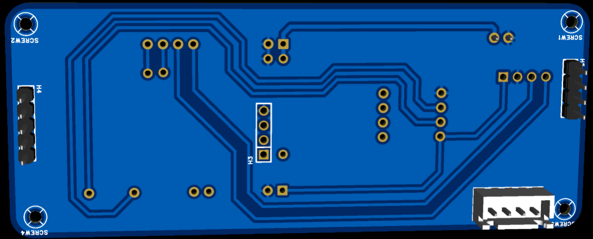
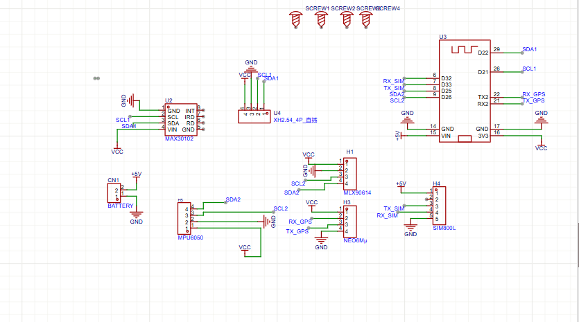
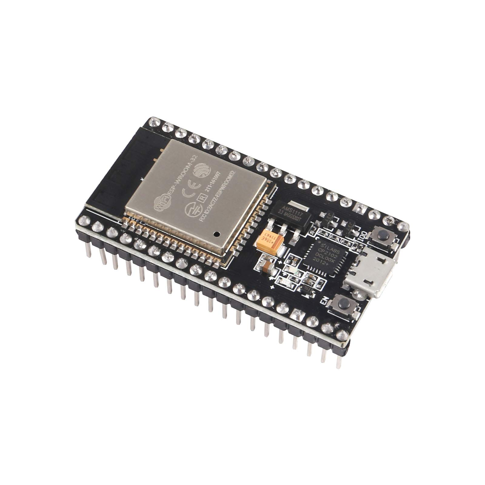
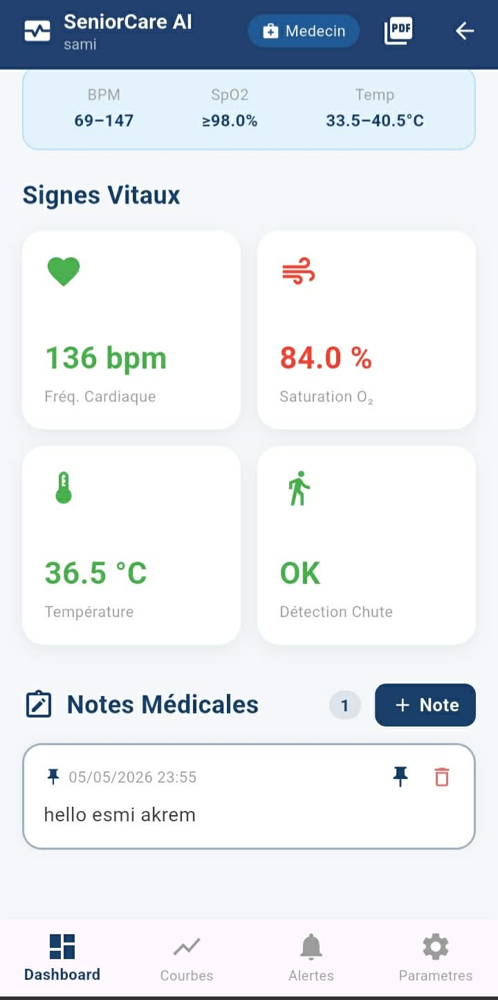
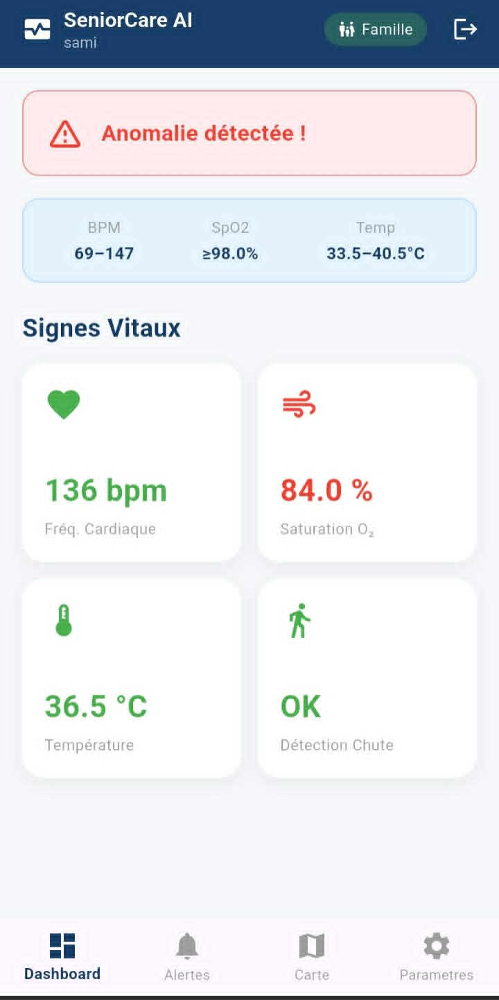
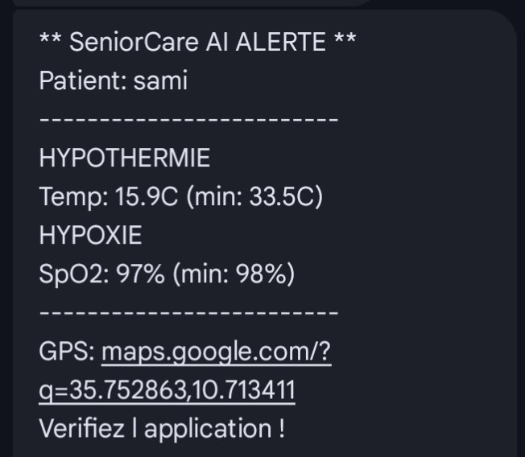
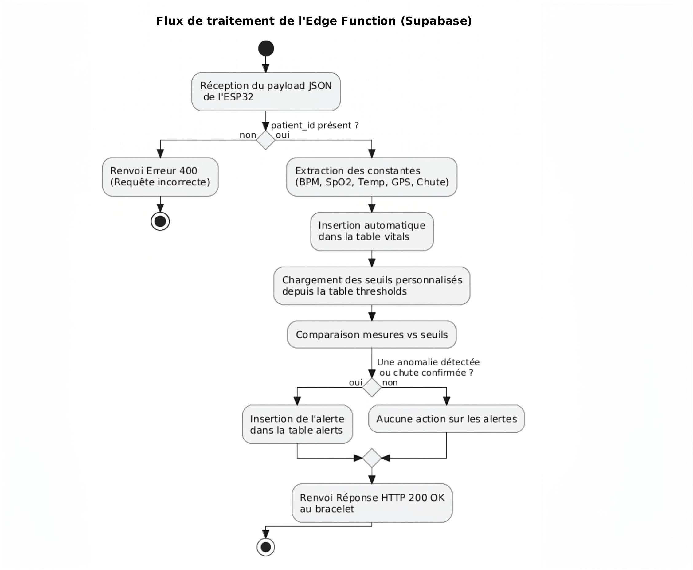

6 Sections · 17 Slides
1
Introduction — Organisme d'accueil
2
Problématique et Solution Proposée
3
Méthodologie de Travail
4
Étude Conceptuelle
5
Réalisation
6
Conclusion et Perspectives


| Critère | Apple Watch | BioIntelliSense | Philips Lifeline | ✦ SeniorCare AI |
|---|---|---|---|---|
| Dépendance matérielle | ✗ iPhone requis | ✗ Hub dédié | ✗ Bouton seul | ✓ Autonome |
| Alertes autonomes | ✗ Sans iPhone | ✗ Sans réseau | Bouton manuel | ✓ SMS GSM direct |
| Suivi médecin | Limité | Limité | ✗ Absent | ✓ Dossier + PDF |
| Géofencing GPS | Basique | ✗ Absent | ✗ Absent | ✓ 50–500 m config. |
| Rapport médical PDF | ✗ Absent | Partiel | ✗ Absent | ✓ Exportable |
| Coût | Très élevé | Abonnement coûteux | Abonnement mensuel | ✓ Solution ouverte |











